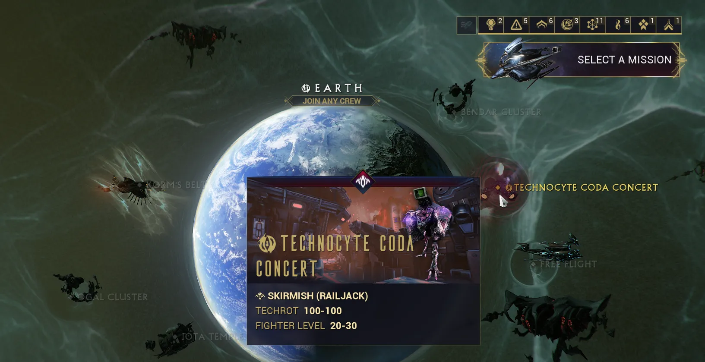
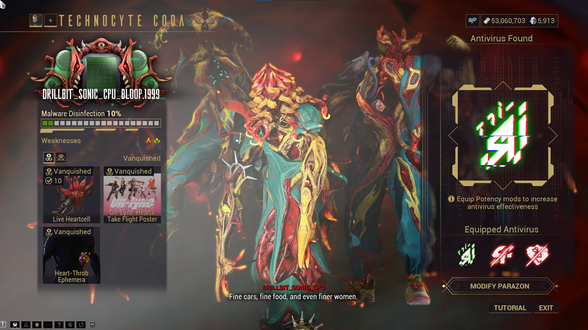

Technocyte Codas
Table of Contents
Overview
Technocyte Codas are the third addition to Warframe's Adversary system and are the Techrot version of Kuva Liches and Sisters of Parvos. Once summoned, your Coda boyband will begin taking over Höllvania. Unlike Liches and Sisters, Codas won't steal your resources and will instead leave yellow cysts on any Warframe until the hunt is completed.
Defeating your Coda gives you the choice to convert or execute them. Both options give slightly different rewards but similarly to Liches and Sisters, executing them is the only way to obtain Coda Weapons, specialized Techrot variants of infested weapons.
Note: Once created, a Coda cannot be removed without completing the hunt. The whole process is simpler than previous adversaries, but this guide is still worth reading before getting started.
Preparing for a Coda
Before creating your Coda, you'll want to be well prepared.
Progression Requirements
- Completion of The Hex
- A Railjack with at least one Intrinsics class at rank 5 for the final showdown
Mods
To defeat your Coda, you'll need Antivirus mods and Potency mods, which you collect from special Antivirus bounties. There are 8 Antivirus mods and I recommend collecting one copy of each before starting your hunt. During the bounty, slain Techrot will drop Potency mods, which speed up the disinfection.
These mods will go in your Parazon (accessible from the arsenal) and will be used to guess the Coda's weakness.
{kind=link}
How to get a Coda
To create your Coda, enter a Höllvania Exterminate, Hell-Scrub, or Legacyte Harvest mission and kill Techrot until a mixtap drops. Take the mixtape to a terminal and hack it. Regardless of whether the hack succeeds or fails, the Techrot virus will manifest into a new Technocyte Coda.
{kind=link}
{kind=link}
Unlike Liches or Sisters, Codas don't have any manipulation mechanisms, so feel free to run any frame.
Note: Codas can be traded like other Adversaries but Warframe.market does not support Coda listings. Use trade chat or trade channels on large Warframe servers instead.
Fighting Your Coda
Technocyte Codas use a slightly different, and significantly easier fight system compared to Liches and Sisters. Once spawned, your Coda will infect Höllvania missions, shown by a green cloud around the Höllvania nodes. Each mission has a 25% chance to spawn your Coda, with each no-show increasing the chance by 25%. Stab attempts will reset the spawn chance back to 25%.
To expose the Coda's weakness you will need the figure out the Antivirus mod that it's vulnerable to. Since there are only 8 Antivirus mods, you can test 3 per stab and determine the right mod in a maximum of 3 stabs.
After discovering the correct Antivirus, replace your non-working Antivirus mods with Potency mods. These speed up the disinfection meter, and once disinfection reaches 100% your Coda moves to the final showdown stage.
Final Showdown
Disinfecting your Coda will cause them to flee to the Earth Proxima region (Railjack). As mentioned in the preparation section, you'll need a Railjack with one Intrinsics class at rank 5 to access the mission.
We do advise doing this in a public lobby or a full group even if you're a fully geared veteran. Each additional Technocyte Coda you have to face in the final challenge will give an additional Live Heartcell.
Note: Only people with a Coda at the final showdown stage can join this mission.
{kind=link}

After defeating your Coda for the final time, you'll get the option to convert them or vanquish them.
Vanquishing is the common (and recommended) route since it's the only way to get the Coda's weapons
Converting lets the Coda randomly appear in missions to assist you or be used as Railjack defensive crew. Converted Coda can also be traded/sold to other players, typically due to an ephemera or a funny name or appearance.
{kind=link}
Rewards
Technocyte Codas are very clear about what loot you will receive on vanquishing or conversion. On the Coda profile page, the bottom left corner will display the loot given for both options.
The loot will consist of :
- Universal: A random Ephemera, Emote, or Captura
- Universal: A random Floof or Poster
- On Vanquish: 10-15 Live Heartcells
- On first conversion / vanquish: The respective convert/vanquish Coda sigil
After obtaining Live Heartcells you can now talk to Eleanor to purchase Coda-variant weapons. Eleanor's offerings rotate every 4 days and will offer weapons with random progenitor bonuses. Each costs 10 Live Heartcells to purchase.
{kind=link}

Please see the Eleanor Shop Rotation Chart on the Warframe Wiki to see what weapons she's offering at the moment.
Additionally, unwanted progenitor elements can always be changed with Valence Fusion or with Elemental Vices which Eleanor sells and can be used to freely change the progenitor element of any max rank Coda weapon.
Top